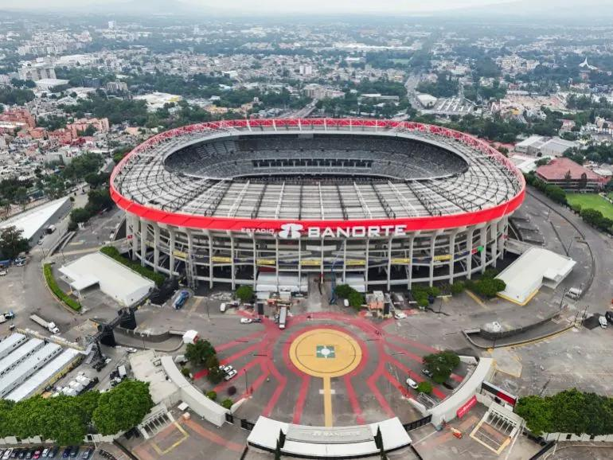
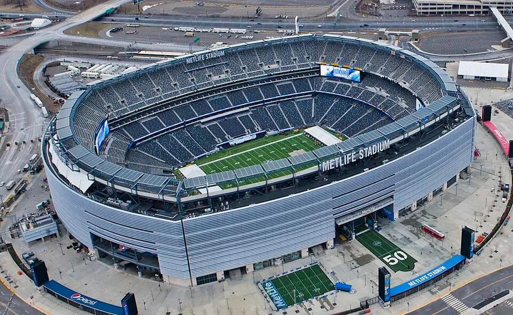
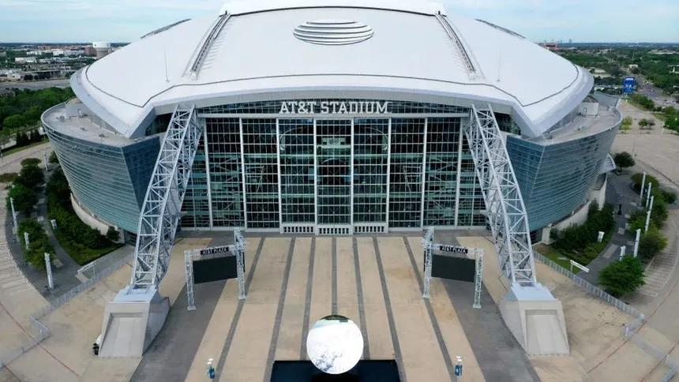
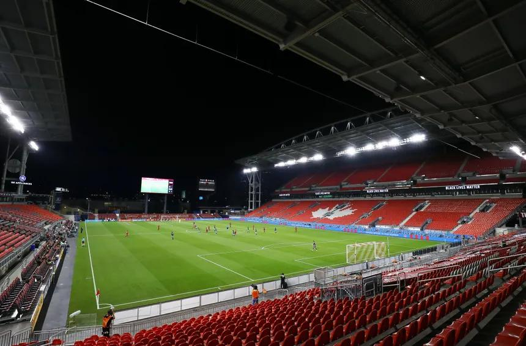

Estadio Azteca
Mexico City, Mexico. Hosts the opening match and becomes the first stadium to stage games at three men's World Cups.
The tournament runs from Thursday, June 11 to Sunday, July 19, 2026. The group stage begins on June 11 and runs through June 27, followed by the knockout rounds. The opening match is at Estadio Azteca in Mexico City, and the final is at MetLife Stadium in East Rutherford, New Jersey.
| Date | Match | Host city |
|---|---|---|
| June 11 | Mexico vs. South Africa (Opening match) | Mexico City |
| June 12 | United States vs. Paraguay | Los Angeles |
| June 12 | Canada vs. opponent to be confirmed | Toronto |
| June 14 | Netherlands vs. Japan | Dallas |
| June 16 | Argentina vs. Algeria | Kansas City |
| June 17 | England vs. Croatia | Dallas |
| July 19 | Final | New York / New Jersey |
Sixteen cities across three countries will host matches. Here are a few of the landmark venues for the 2026 tournament.

Mexico City, Mexico. Hosts the opening match and becomes the first stadium to stage games at three men's World Cups.

East Rutherford, New Jersey. Hosts the final on July 19 and holds up to about 82,500 fans.

Arlington, Texas. One of the busiest venues, hosting nine matches including a semifinal.

Toronto, Canada. Hosts Canada's matches, including the country's first home men's World Cup game.